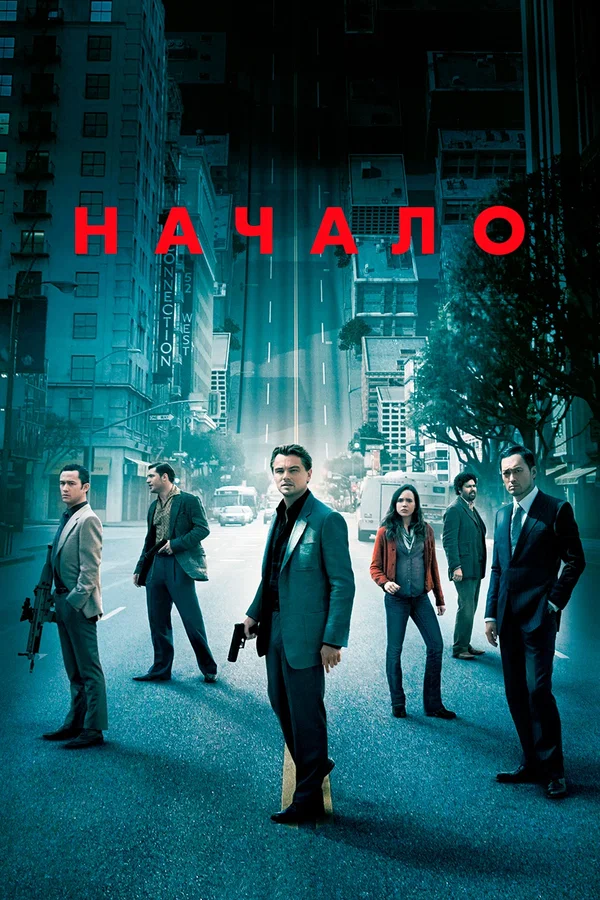
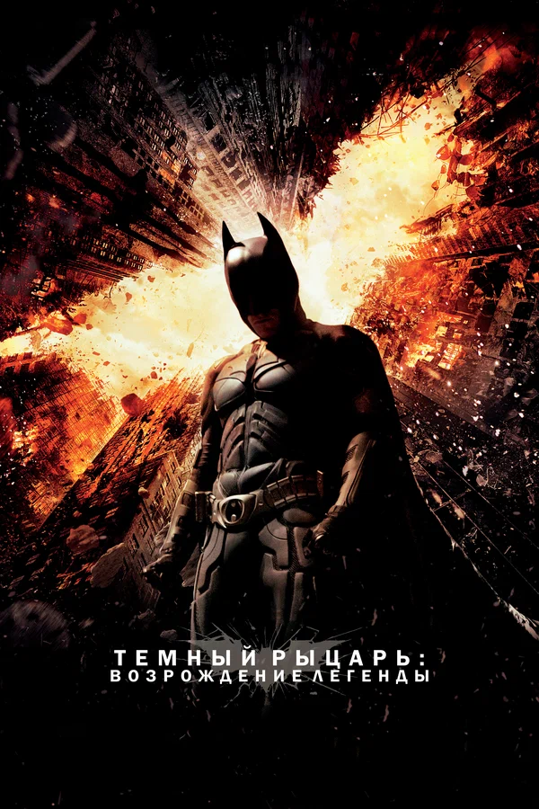

Э́двард То́мас Ха́рди
- 15 сентября 1977
- 47 лет
- Всего фильмов: 112 (2001 — 2025)
- Снимается в таких жанрах, как: драма, триллер, боевик
Лучшие фильмы

Веном
Веном 2
Веном: Последний танец

Начало

Легенда

Темный рыцарь: Возрождение легенды
Безумный Макс: Дорога ярости
Самый пьяный округ в мире
Интересные факты
- Том, единственный ребёнок в семье, родился в Хаммерсмите[3] и вырос в Лондоне, в Ист-Шине. Его мать Энн была из семьи ирландских католиков и работала художницей, а отец Эдуард (Чипс) Харди писал комедии.
- Дебют в кино состоялся в военном триллере Ридли Скотта «Чёрный ястреб» (2001).
- В 21 год стал победителем конкурса красоты «Breakfast’s Find Me», в качестве приза получив денежное вознаграждение и контракт с модельным агентством.
- Сыграл эпизодическую роль в восьмой части «Звёздных войн».